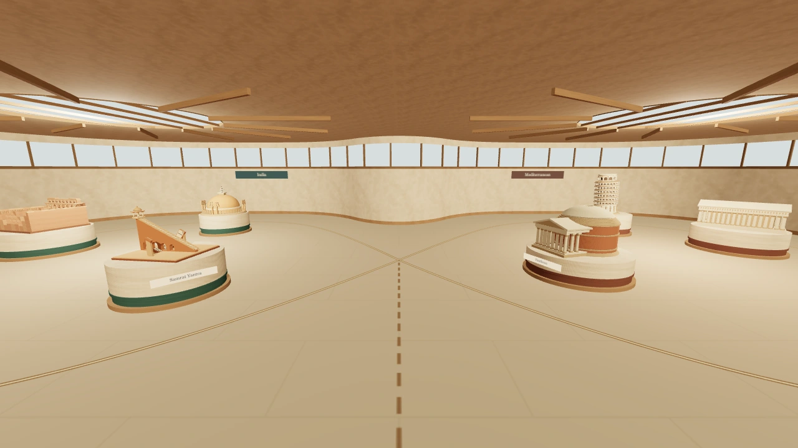

Environment art / Material study
Cardboard Gallery.
Walk a figure eight through six architectural miniatures, from the steps of Patan to the dome of Rome.

Opening the gallery…
Twin Galleries
Choose Walk in 3D to enter the gallery.
The collection
Built from card.
Two wings trace different ways to build with steps, columns and domes. Circle each miniature to see its silhouette change, or select it to examine the construction up close.
Architecture studies
Original interpretive models by Navidev Studios. The Parthenon is shown with its roof reconstructed. Gallery cardboard texture from ambientCG.
Architectural references include Rani ki Vav, Sanchi, the Pantheon and the Acropolis Museum.